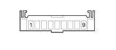

D097C SHORT CIRCUITING COUPLING (FRONT)
- Path
- Electrical equipment > 3 CONNECTORS > D INTERMEDIATE COUPLINGS > D097 SHORT CIRCUITING COUPLING > D097C SHORT CIRCUITING COUPLING (FRONT)
- Kind
- connector pinout (pin -> wire colour -> other end)
- Applies to
- engines: 1.3 JTD 16v; all production periods
- Interactive page
- https://sloeber94.github.io/elrnDB-fPnd/en/#/169003138
Applies to: engines: 1.3 JTD 16v; all production periods

Wiring | Colour |
|---|---|
NERO (black) |
Pin | Cable | Destination | |||
|---|---|---|---|---|---|
Sec.. | Colour | Node | Connect. | Pin | |
1 | 1 | ZB (violet with white stripe) | 2 | ||
2 | 1 | ZB (violet with white stripe) | 5 | ||
3 | 0,5 | ZB (violet with white stripe) | 92 | ||
4 | 0,5 | ZB (violet with white stripe) | 20 | ||
8 | 0,5 | LG (blue with yellow stripe) | 68 | ||
9 | 0,5 | LB (blue with white stripe) | 1 | ||